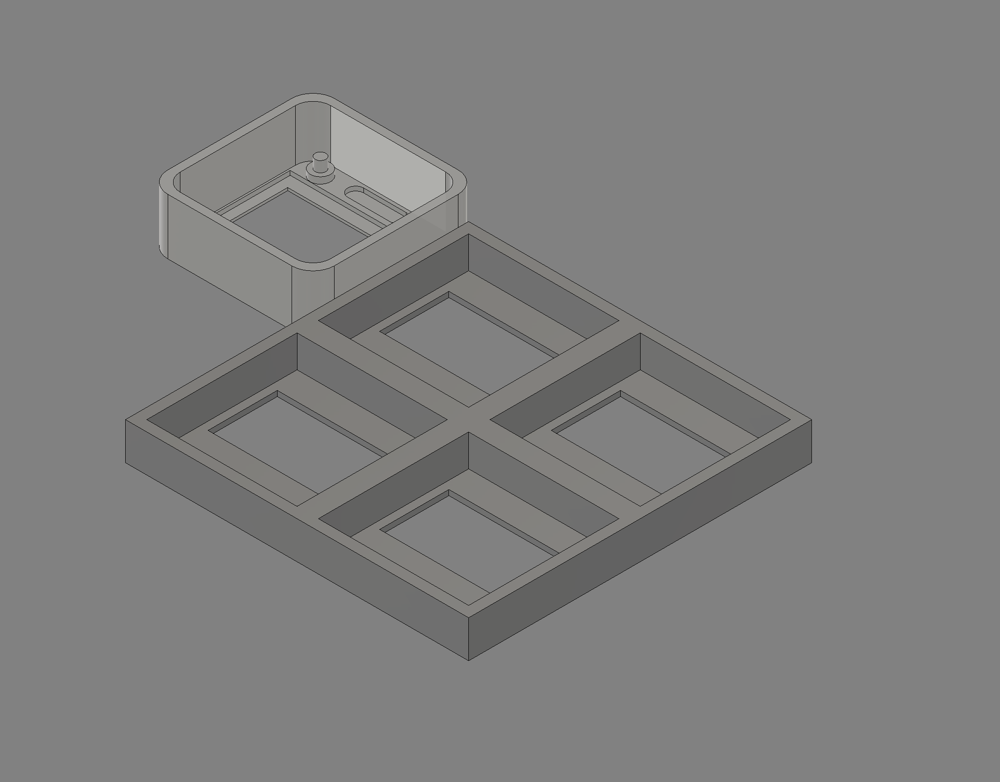

For the final project CAD, I changed directions from my original e-ink display idea and decided to use a 2x2 OLED display setup instead. The e-ink display was extremely frustrating to work with and gave me a lot of problems during testing — especially with screen refreshing and general reliability. Switching to OLEDs felt like the right call: they're easier to control, update quickly, and are far more dependable for showing live information.

Why I Dropped the E-Ink Display
The e-ink display was the original centerpiece of this project, but it became a persistent source of frustration throughout testing. Refresh behavior was unpredictable, ghosting was an issue, and getting reliable partial updates proved more trouble than it was worth. Rather than continuing to fight it, I made the call to pivot to OLEDs and focus on building something that actually works well.
The New Design: 2x2 OLED Layout
The CAD model consists of two main parts: a base that holds four separate display sections arranged in a 2x2 grid, and a top housing that fits over the electronics to keep the display assembly organized and clean.
The design priorities were:
- Keep parts simple, clean, and printable without supports
- Leave room for mounting each screen securely
- Route wiring cleanly through the enclosure
- Create a polished look that doesn't feel like a prototype
Goals Going Forward
The goal is a functional enclosure that's easy to print and assemble while still looking intentional. The 2x2 layout gives each screen its own dedicated zone, which should make it straightforward to display different pieces of information on each panel — temperature, humidity, time, or whatever makes the most sense once I get into programming.
This is a private blog for course notes and reflections. Content is not indexed or publicly listed.